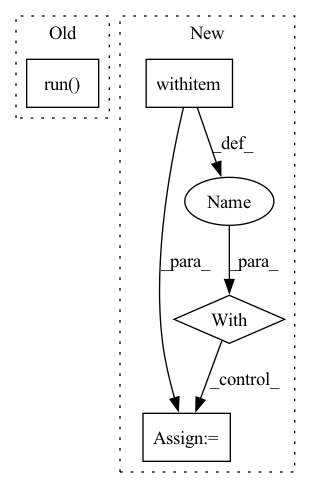

Pattern ID :32003

Before Change
def sync_local_dir(self) -> None:
Syncs a local directory to a GCS bucket.
sync_command = f"gsutil -m rsync -d -r {self.source} gs://{self.name}/"
subprocess.run(sync_command, shell=True, check=True)
def _transfer_to_gcs(self) -> None:
if self.source.startswith("s3://"):
data_transfer.s3_to_gcs(self.name, self.name)
After Change
Syncs a local directory to a GCS bucket.
sync_command = f"gsutil -m rsync -d -r {self.source} gs://{self.name}/"
logger.info(f"Executing: {sync_command}")
with subprocess.Popen(sync_command.split(" "),
stderr=subprocess.PIPE) as process:
while True:
line = process.stderr.readline()
if not line:
break
str_line = line.decode("utf-8")
In pattern: SUPERPATTERN
Frequency: 3
Non-data size: 4
Instances
Fragment ID: 93513291
Project Name: skypilot-org/skypilot
Commit Name: 25ade2737fb62fdfc2dbab6bb2102d927bfb2e6f
Time: 2022-02-16
Author: michael.luo@berkeley.edu
File Name: prototype/sky/data/storage.py
M Class Name: GcsStore
N Class Name: GcsStore
M Method Name: sync_local_dir(1)
N Method Name: sync_local_dir(1)
M Parent Class: AbstractStore
N Parent Class: AbstractStore
M File Name: prototype/sky/data/storage.py
N File Name: prototype/sky/data/storage.py
M Start Line: 370
M End Line: 371
N Start Line: 410
N End Line: 432
'>
Before Change
sess_options = onnxruntime.SessionOptions()
sess_options.intra_op_num_threads = num_cores
ort_network = onnxruntime.InferenceSession(onnx_filepath, sess_options)
ort_outputs = ort_network.run(
get_output_names(onnx_filepath),
{name: value for name, value in zip(get_input_names(onnx_filepath), inputs)},
)
// Gather DeepSparse Engine outputs
print("Executing model with DeepSparse Engine...")
dse_network = compile_model(onnx_filepath, batch_size, num_cores)
After Change
print("Executing model with ONNXRuntime...")
sess_options = onnxruntime.SessionOptions()
sess_options.intra_op_num_threads = num_cores
with override_onnx_batch_size(onnx_filepath, batch_size) as override_onnx_filepath:
ort_network = onnxruntime.InferenceSession(override_onnx_filepath, sess_options)
ort_outputs = ort_network.run(output_names, inputs_dict)
// DeepSparse Engine inference
print("Executing model with DeepSparse Engine...")
'>
Fragment ID: 93513294
Project Name: neuralmagic/deepsparse
Commit Name: 913a2cfe3a4252f1c0d443f5c258dee264c1f13d
Time: 2021-01-27
Author: michael@neuralmagic.com
File Name: examples/benchmark/check_correctness.py
M Class Name: AnonimousClass
N Class Name: AnonimousClass
M Method Name: main(0)
N Method Name: main(0)
M Parent Class:
N Parent Class:
M File Name: examples/benchmark/check_correctness.py
N File Name: examples/benchmark/check_correctness.py
M Start Line: 80
M End Line: 94
N Start Line: 81
N End Line: 100
'>
Before Change
file (Default path: ~/.aws/config).
sync_command = f"aws s3 sync {self.source} s3://{self.name}/ --delete"
subprocess.run(sync_command, shell=True, check=True)
def _transfer_to_s3(self) -> None:
if self.source.startswith("gs://"):
data_transfer.gcs_to_s3(self.name, self.name)
After Change
sync_command = f"aws s3 sync {self.source} s3://{self.name}/ --delete"
logger.info(f"Executing: {sync_command}")
with subprocess.Popen(sync_command.split(" "),
stderr=subprocess.PIPE) as process:
while True:
line = process.stderr.readline()
if not line:
break
str_line = line.decode("utf-8")
'>
Fragment ID: 93513292
Project Name: skypilot-org/skypilot
Commit Name: 25ade2737fb62fdfc2dbab6bb2102d927bfb2e6f
Time: 2022-02-16
Author: michael.luo@berkeley.edu
File Name: prototype/sky/data/storage.py
M Class Name: S3Store
N Class Name: S3Store
M Method Name: sync_local_dir(1)
N Method Name: sync_local_dir(1)
M Parent Class: AbstractStore
N Parent Class: AbstractStore
M File Name: prototype/sky/data/storage.py
N File Name: prototype/sky/data/storage.py
M Start Line: 257
M End Line: 258
N Start Line: 258
N End Line: 280